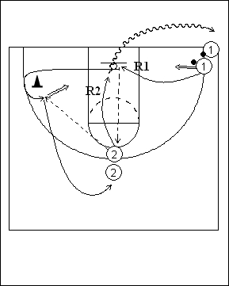

Catégorie : SHOOTS (Sh-014)
Déroulement
- Deux files de joueurs. Une file avec ballons à la baseline dans un coin de terrain; l’autre file sans ballon en position de meneur.
- Le premier joueur de la file 1 shoote, réalise son rebond et la première passe au premier joueur de la file 2. Le premier joueur de la file 1 change de côté, contourne le cône et redemande le ballon pour un deuxième shoot.
- Après son deuxième shoot, 1 va dans la file 2. 2 réalise le deuxième rebond et va en dribble derrière la file 1.
Coaching points
- Demander beaucoup de rythme jusqu’à la réalisation du deuxième jump shoot.
- On peut évidemment varier la position des deux files pour demander des shoots d’emplacements divers.